uppercut-0.47-front
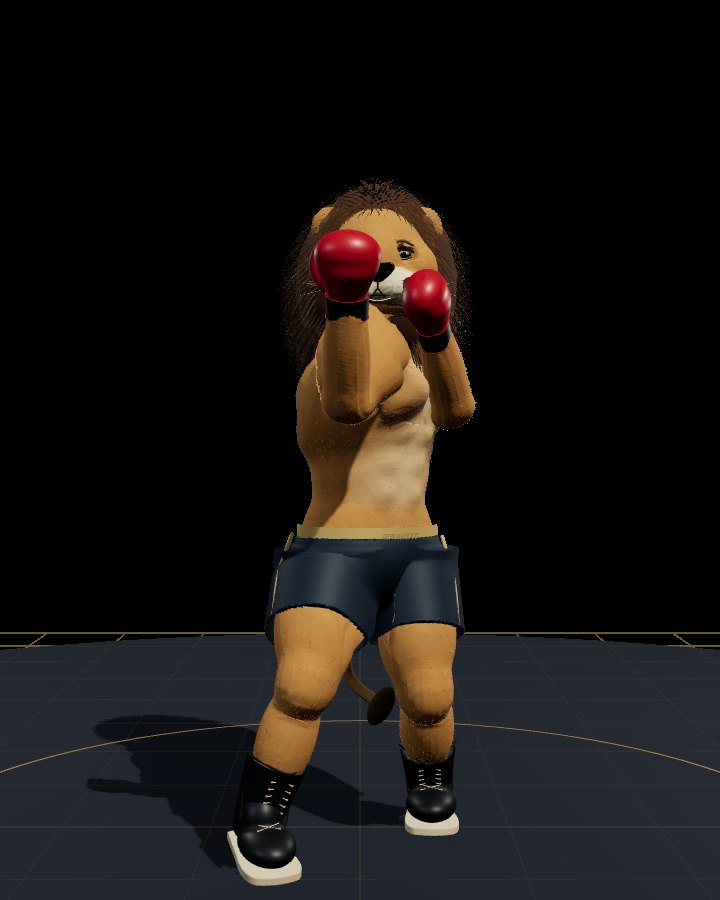
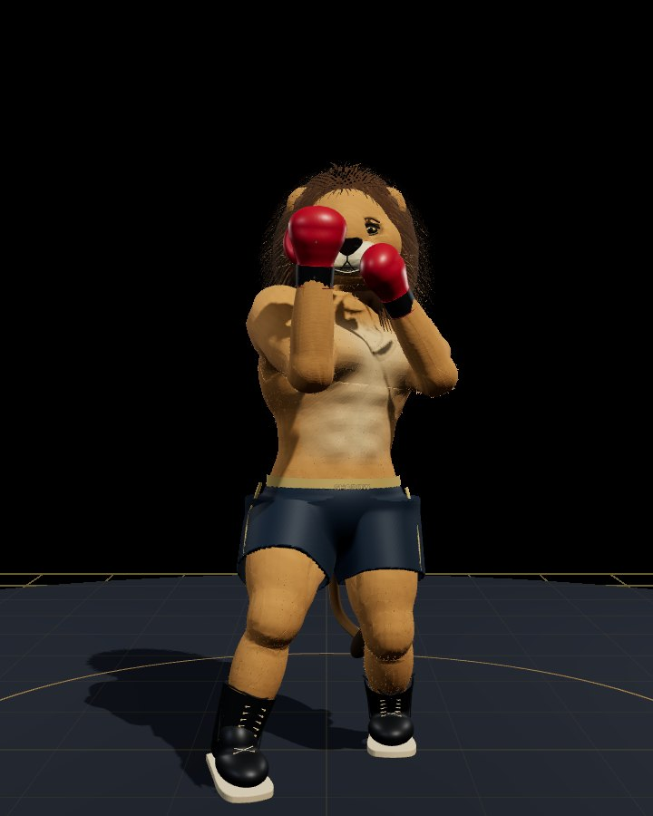
Before: published eec0dc7. After: R79 candidate; exact source hashes and cameras in manifest. Same viewport, stage lighting and camera. Still frames are not real-time FPS measurements; no physical-phone validation or photorealism claim.


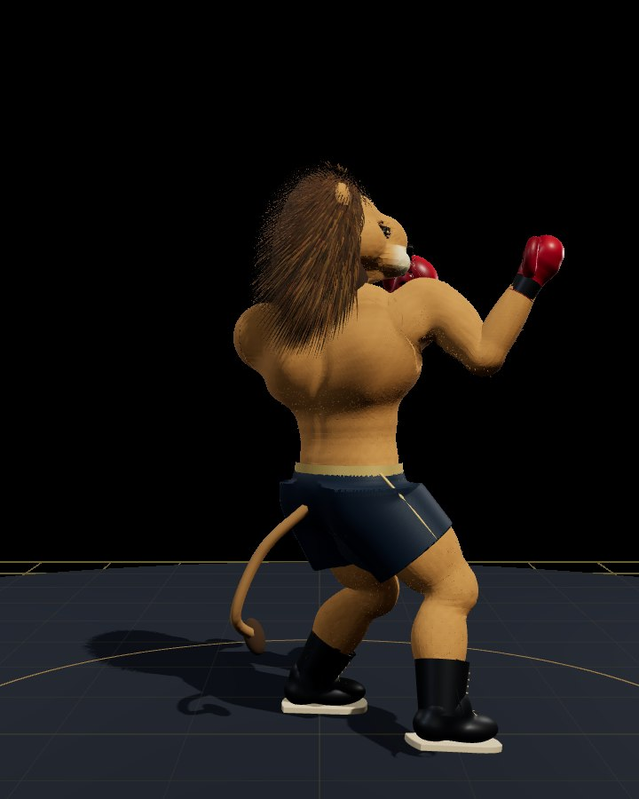
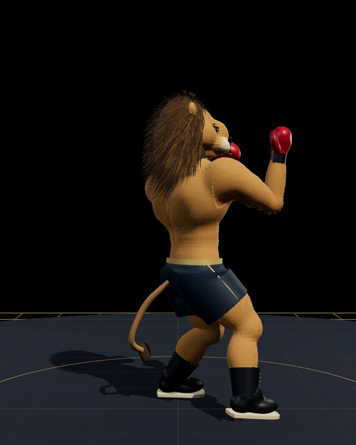
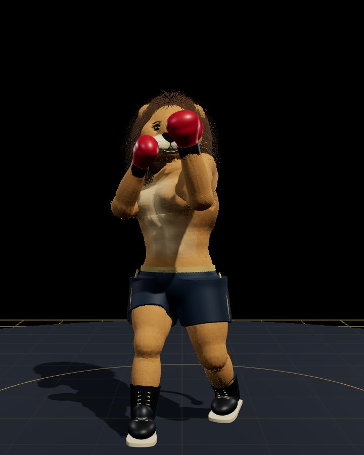
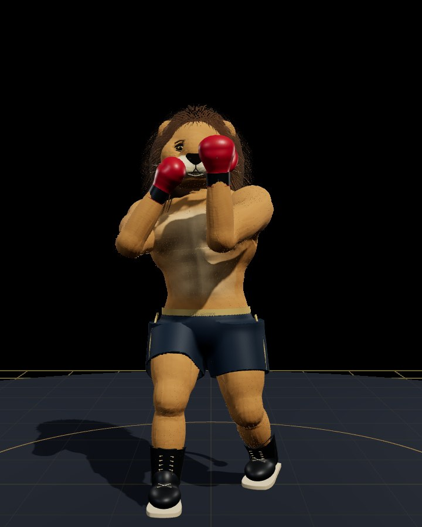
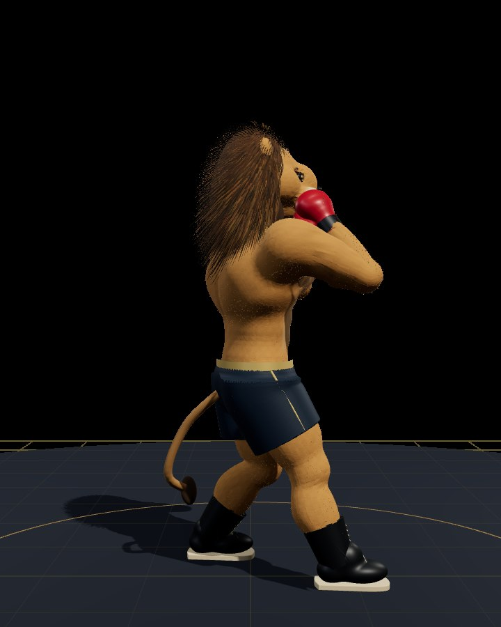
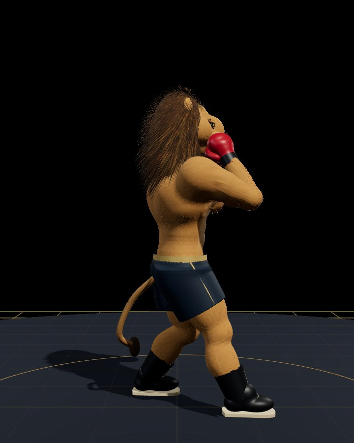
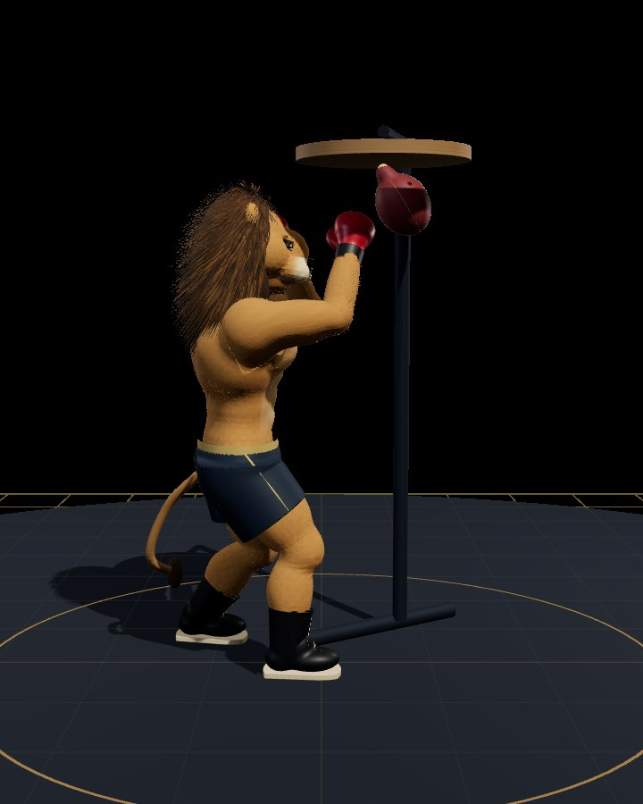
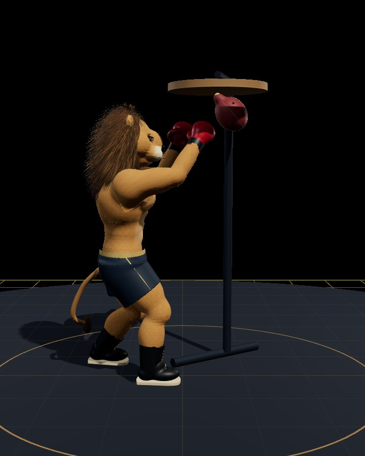
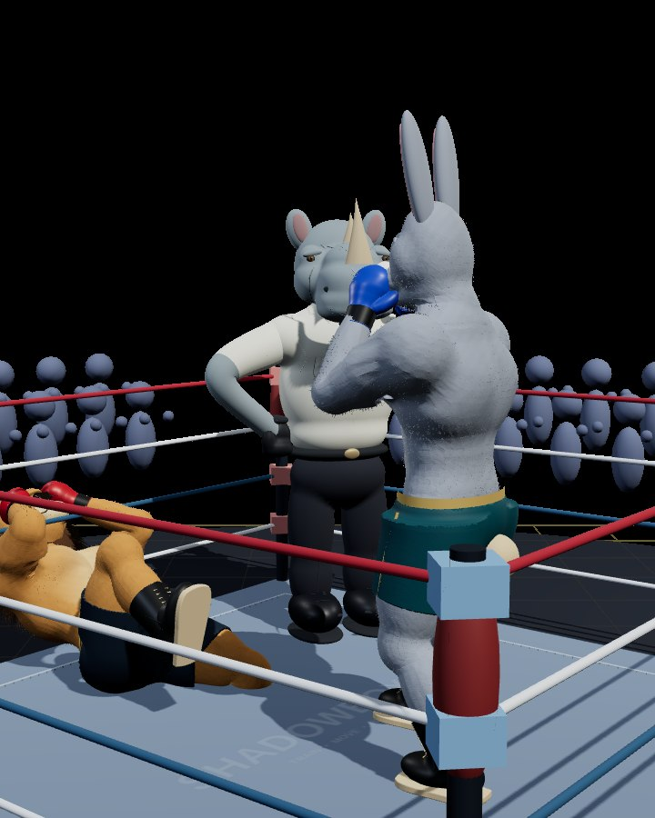
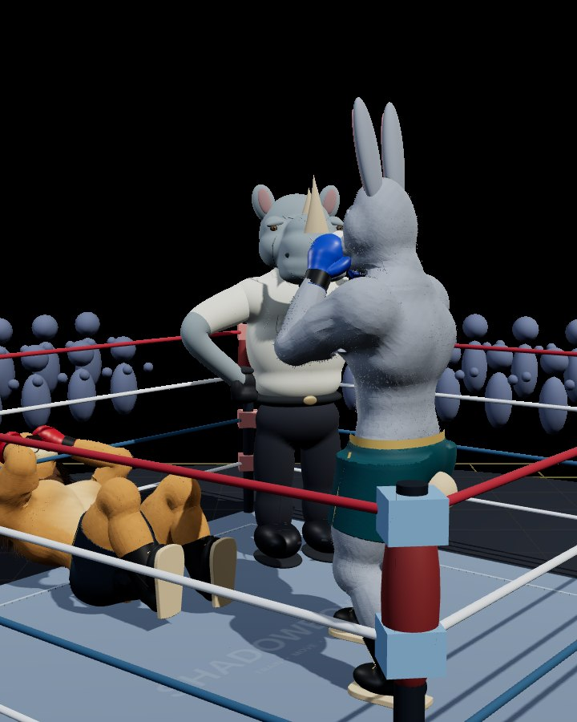
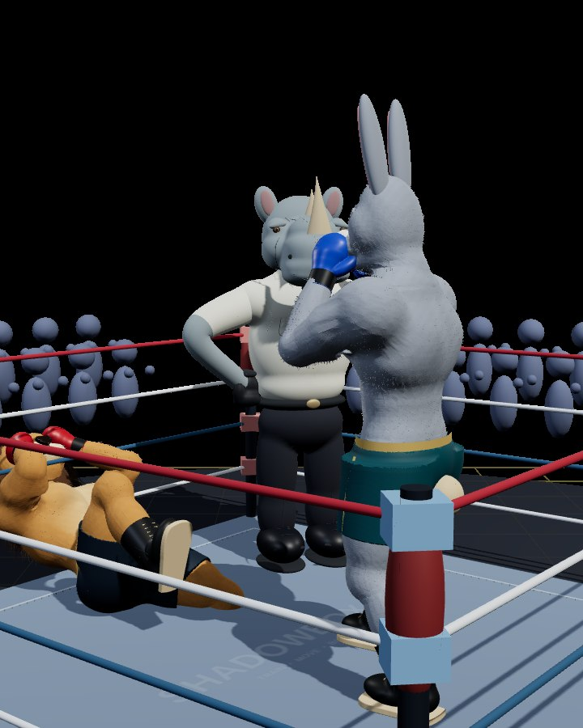
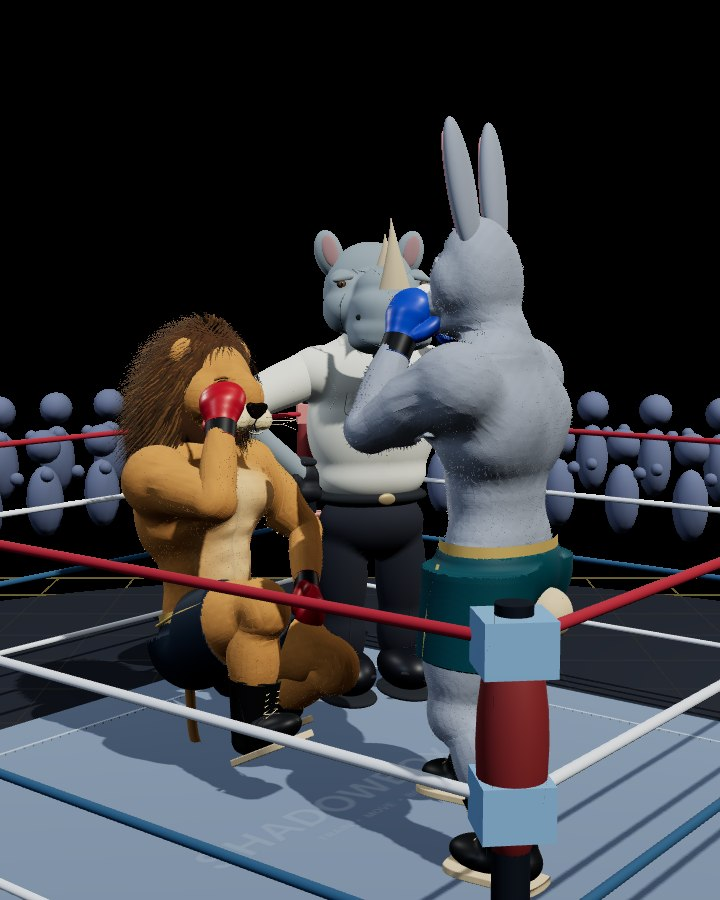
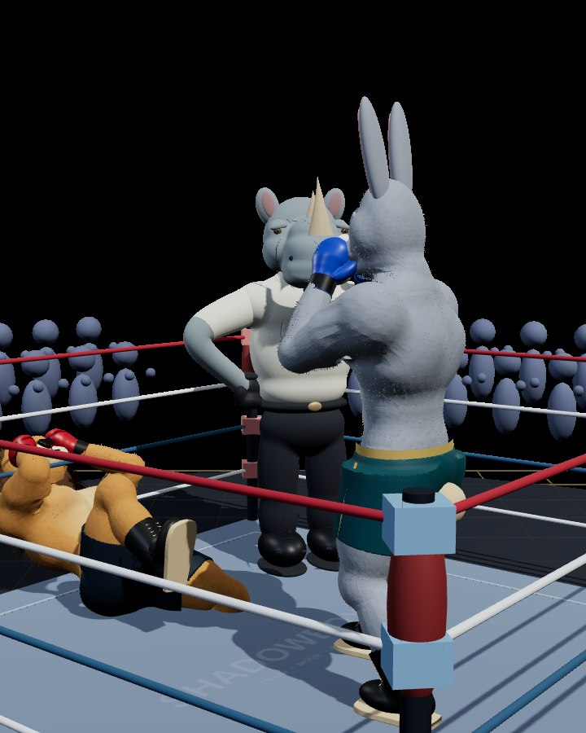
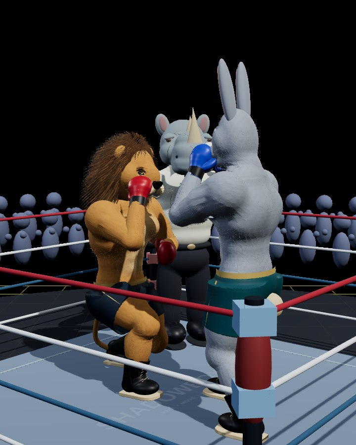